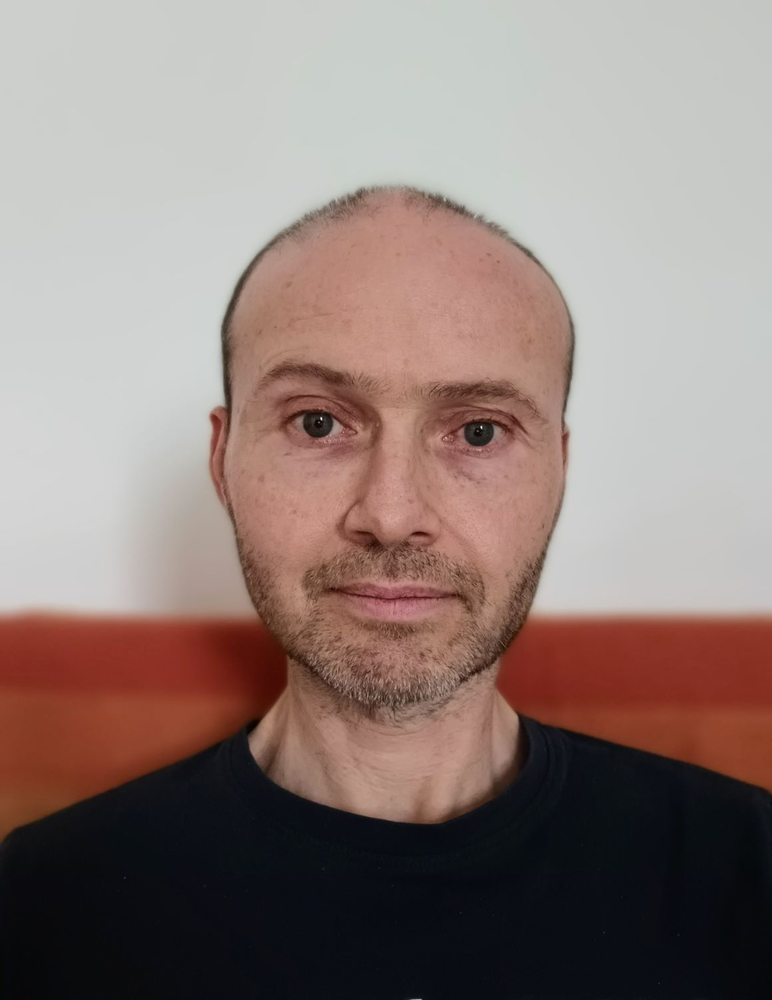

About Me

My Approach
My counselling training was in psychosynthesis* - this is an integrative approach which draws from a number of different models, including psychodynamic, person-centred and gestalt therapy. My approach is holistic in that it acknowledges the whole person i.e. the physical, emotional, mental and spiritual dimensions of experience. Psychosynthesis recognises that we can often have conflicting thoughts, feelings and drives within ourselves, causing us to feel limited and blocked from reaching our potential. Acknowledging and processing these aspects of our experience can help us develop a broader, more inclusive perspective, which can lead towards a greater sense of harmony and integration as an individual.
As well as exploring the obstacles and difficulties that individuals face, I will also support clients to contact what is emerging for them and what changes are seeking to take place in order for them to live more closely aligned with deeper values and aspirations.
I'm aware that as a culture we tend to spend a lot of time "in our heads". My experience has taught me that meaningful change requires a deepening relationship and sensitivity towards our feelings, effectively bringing us more into our bodies. I'm influenced by Buddhist practices such as mindfulness, which support clients to come into a deeper relationship with their immediate feelings and sensations.
*Further information about psychosynthesis can be found at: www.psychosynthesis.org and www.psychosynthesistrust.org.uk

Some of the issues I work with include:
Addiction, Anger management, Anxiety, Depression, Generalised anxiety disorder, Low self-confidence, Obsessive compulsive disorder, Panic disorder, Phobias, Relationship issues, Self-harm, Spirituality, Stress.
Links below to specialist articles:
-What is Transpersonal Therapy?-When Spiritual Awakening becomes a Spiritual Crisis

I am a registered member of BACP, a professional body representing counselling and psychotherapy in the UK, and abide by their code of ethics and values. Further information can be found at: www.bacp.co.uk/ethical_framework
I am a qualified practitioner of Counselling for Depression (CfD), a model of psychological therapy recommended by NICE for the treatment of depression and approved for delivery within the Improving Access to Psychological Therapies Programme (IAPT).